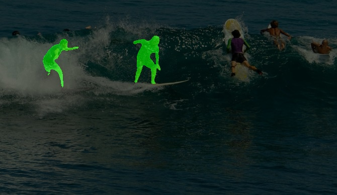
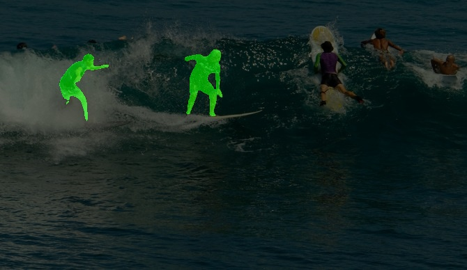
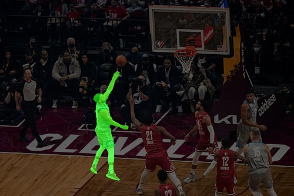
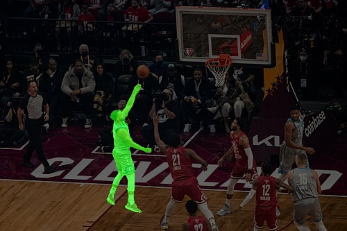
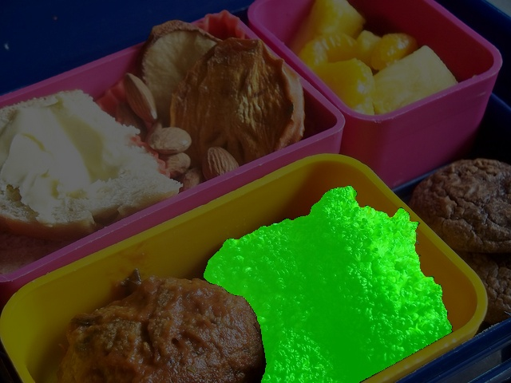
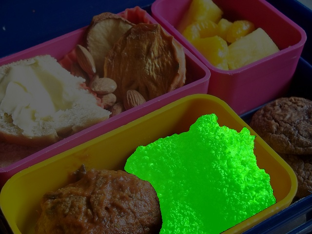
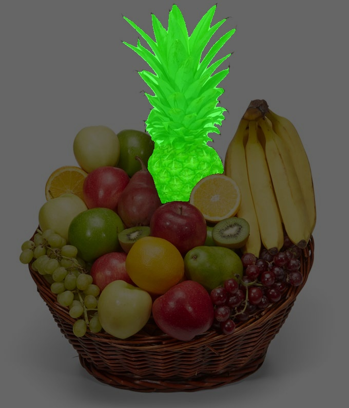
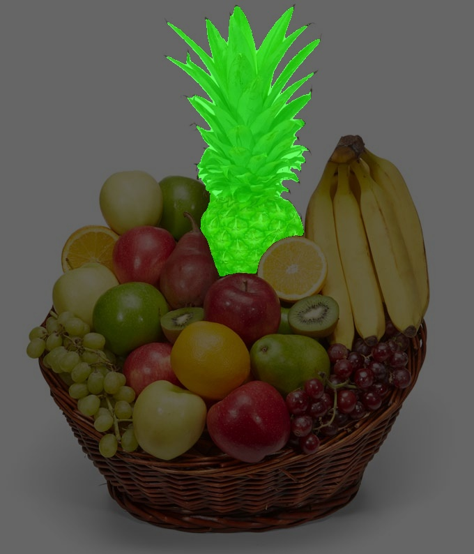

User: The first chair violinist of an orchestra is a vital musical leader with widely ranging responsibilities, from tuning the orchestra to working closely with the conductor. Who is most likely the first violinist in the image? Please output the segmentation mask.
User: Please identify the activity people are doing in the image and segment those individuals who have already demonstrated excellent body strength and stability through some kind of professional actions. Lastly, output the mask that includes these individuals.
 

User: I am looking for a gym equipment to do weight training on my arms muscles. Which equipment would most likely draw my attention when I walk into a gym? Please output the segmentation mask.

User: Which objects are composed of a short bar with a weight on each end, typically used for weight training? Please find the unracked ones and output the segmentation mask.
User: Please segment the person who is shooting in this NBA All-Star game.
 

User: Please segment the food with the highest amount of vitamins.
 

User: A person would like to recharge on some vitamins with fruit, however after a long day of school, they don't want to eat anything that would take too long to prepare, if we were to rank from most easy to hardest, what would be his last choice?
 
